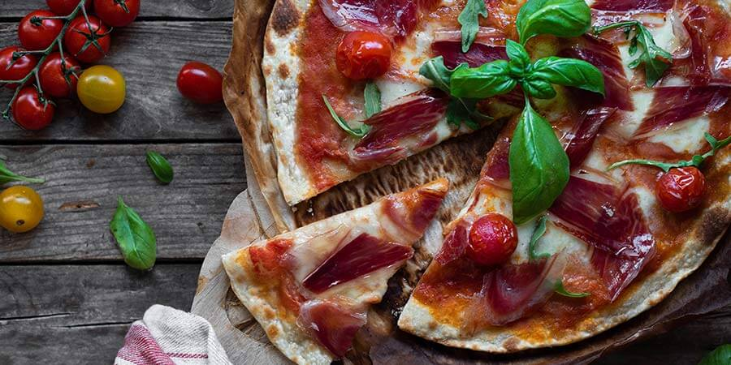
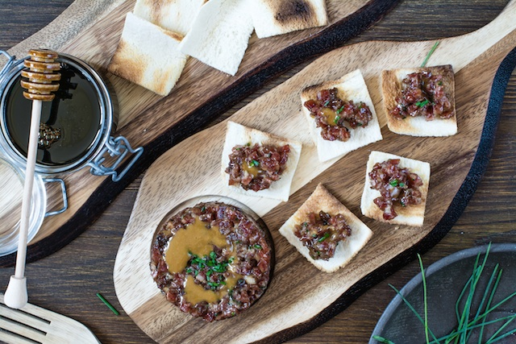

PIZZA DE JAMÓN 100% IBÉRICO
Una pizza puede ser una propuesta saludable para cualquier comida si la masa se prepara en casa y se eligen bien los ingredientes del relleno. En esta propuesta con jamón ibérico, rúcula y tomates es un plato completo, natural y con no demasiadas calorías.
INGREDIENTES
- Masa de pizza
- Mozzarella fresca
- Tomate triturado concentrado
- Jamón de bellota 100% Ibérico Ibéricos Martín
- Rúcula
- Albahaca
- Tomates cherry
ELABORACIÓN
- Precalentar el horno a 200 grados por arriba y abajo.
- Extender la masa de pizza en forma redondeada.
- Con una cuchara sopera cubrir la superficie de la masa con el tomate.
- Corta la mozzarella en medallones más o menos iguales de grosor y expenderlos por la base de pizza.
- Colocar los tomates cherry por toda la masa (entre 6 y 8 unidades).
- Introducir la pizza en el horno sobre papel vegetal especial para el horneado.
¡A DISFRUTAR!
TARTAR DE SALCHICHÓN IBÉRICO
El salchichón es uno de esos embutidos que nos ha visto crecer a todos, ¿quién no se ha tomado alguna vez en el colegio el típico bocata de esta pieza elaborada que sabe a pura tradición española? La popularidad del salchichón reside tanto en su versatilidad como en esa combinación equilibrada de ajo y pimienta negra que hace de su consumo algo casi adictivo sobretodo cuando nos referimos al salchichón ibérico de Ibéricos Martín, elaborado con las mejores carnes del cerdo ibérico que pasta en libertad por la dehesa y totalmente natural, sin ningún tipo de aditivo añadido.
INGREDIENTES
- 2 cucharadas de mayonesa de aceite de oliva
- 1 cucharadita de aceite de oliva virgen extra
- 800gr de salchichón Ibéricos Martín
- 40gr de pepinillo agridulce picado
- 40gr de chalota picada
- 30gr de alcaparras picadas
- 5gr de miel
- 10gr de mostaza
- Unas gotas de tabasco
- Cebollino
- Unas tostas de pan
ELABORACIÓN
- Dejamos el salchichón a temperatura ambiente, fuera de su envase, el día anterior.
- Picamos el salchichón sin su piel a conciencia, que quede muy pequeñito, necesitaremos una tabla consistente y un cuchillo bien afilado. Reservamos.
- Picamos también el pepinillo, la chalota y las alcaparras.
- Hacemos una “vinagreta” con la miel, la mostaza, el tabasco, el aceite de oliva y la mayonesa.
- Aliñamos el salchichón como un tartar con el pepinillo, la chalota, las alcaparras y nuestra salsa. Ponemos a punto de sal y de pimienta negra.
- Colocamos el tartar encima de unas tostas de pan y terminamos con un poco de cebollino bien picado.